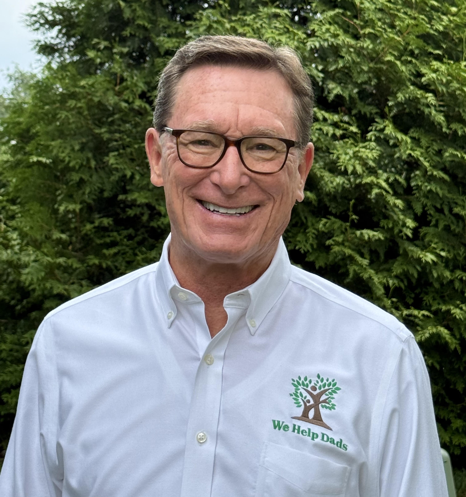
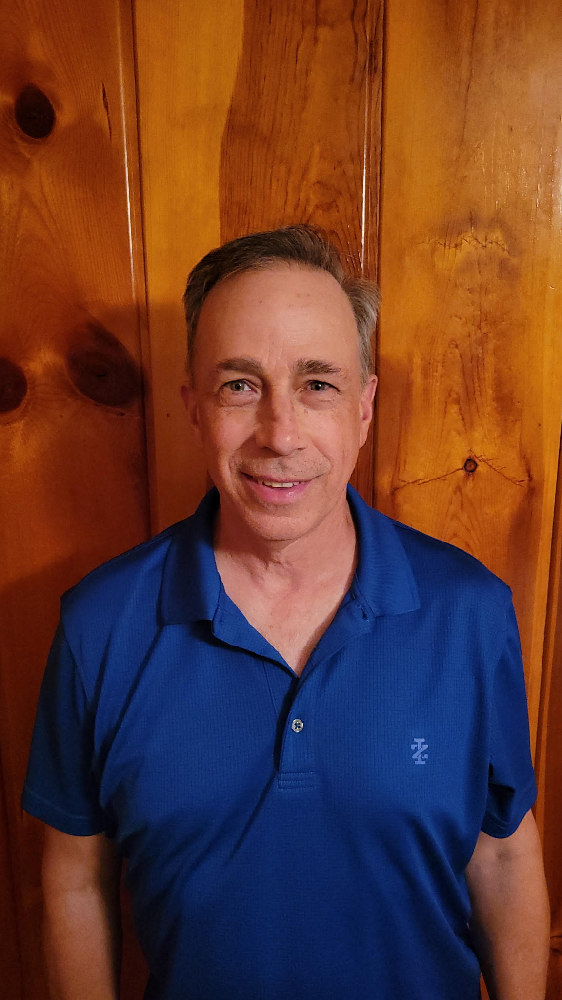

The story, leadership, and partnerships behind the mission to reconnect dads with their children.
Our History
Where it started.
In 2019, Jeff Hutter set out to answer a question: instead of filling the father role himself, what if he helped estranged dads get back into their kids’ lives?
Our founder began volunteering as a big brother in the Kansas City Big Brother Big Sister program in 1975, shortly after graduating from the University of Kansas. He continued mentoring after moving to Louisville and broadened his work through the Boys & Girls Clubs of Louisville.
Jeff was connected to the then-Assistant Prosecuting Attorney in Madison County, Steve Koester—now Judge of the Family Court. “Judge Koester walked me down the hall to Judge Angela Sims and staff director Katie Stapleton of Problem Solving Court, and from there our fatherhood program began.”
Since then, We Help Dads has provided class training to more than 200 fathers from the court system in Madison County, provides fatherhood instruction in the Hamilton County Jail through the TOWER Program, and conducts classes at the Madison County Corrections Complex.
Beginning in 2024, volunteer graduate dads began mentoring others who have turned their lives around but need help overcoming obstacles to full involvement with their children.
Leadership
Who We Are
Board of Directors

Jeffrey Hutter
Founder & President
Jeff retired from a career in dental and health care management in 2019 to found We Help Dads. He was active in programs to mentor boys without fathers in Louisville and Kansas City before creating a program to reconnect estranged dads with their children. He began his career as a broadcast journalist after graduating from the University of Kansas William Allen White School of Journalism. He has a son and several stepchildren and grandchildren in Indiana, Kentucky, and Texas, and an informally adopted son in Kentucky.

Randy Jaros
Treasurer
Ryan Farley
Secretary
Ryan is a dedicated addiction recovery professional with over 6 years of experience in mental health and substance use treatment. He has a strong background in program development, mentorship, and community outreach, with a passion for breaking the stigma surrounding addiction and promoting recovery. As a full-time father of two, Ryan leads with purpose, balancing his professional work with his most important role—being present for his children every day. He is committed to helping individuals and families find hope, build resilience, and create lasting change through support, education, and second chances.
TJ
Tressena Jones
Board Member
MC
Mike Cox
Board Member
Program Advisors
John Wenger, Ph.D — Psychology, Advisor to Madison County, IN, Problem Solving Court
Tom Murray, Ph.D — Psychology, Initial Program Advisor & Instructor, Anderson University
Where We Work
Partner Programs
We Help Dads has been a fatherhood resource for these court programs across Indiana.
The Problem Solving Court of Madison County
The Problem Solving Court of Grant County
The TOWER Program on Hamilton County Corrections
The Madison County Correction Department
The Madison County Community Justice Department
We Help Dads coordinates for Madison County Family Court a grant from the Indiana Supreme Court to provide free legal assistance to parents referred by agencies seeking expanded rights with their children.
Contact
Talk to Jeff.
For questions about Dedicated Dads, referrals, partnership, donation details, or the next class, contact Jeff / We Help Dads.